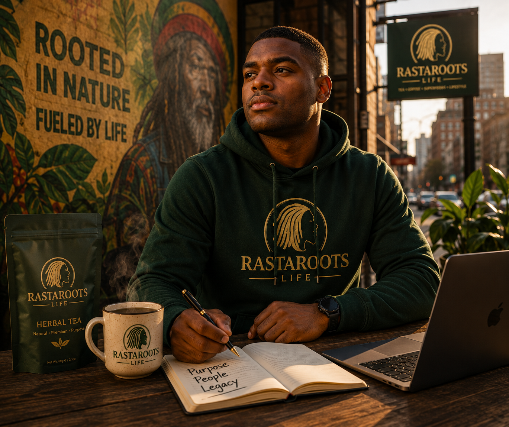

My Story
I wanted to build something with meaning.
RastaRoots Life started from a simple idea: wellness should feel personal, cultural and rooted. Not cold. Not empty. Not just another product on a shelf.
I wanted to create a brand that connects natural herbal tea with daily routine, music, family, history, reflection and community.
For me, this is about remembering where we come from while building something powerful for where we are going.